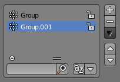
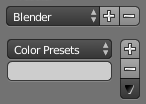

List Views & Presets¶
List Views¶

This control is useful to manage lists of items. They can be found, for example, in the object data properties.
- Select
- To select an item, LMB on it.
- Rename
- By double-clicking on an item, you can edit its name via a text field. This can also be achieved by pressing Ctrl-LMB over it.
- Resize
- The list view can be resized to show more or fewer items. Hover the mouse over the handle (==) then click and drag the handle to expand or shrink the list.
- Filter
Click the Show filtering options button (+) to toggle filter option buttons.
- Search
- Type part of a list item's name in the filter text field to filter items by part of their name.
- Filter Include
- When the magnifying glass icon has a
+sign then only items that match the text will be displayed. - Filter Exclude
- When the magnifying glass icon has a
-sign then only items that do not match text will be displayed. - Sort
Sort list items.
- Alphabetical
- This button switches between alphabetical and non-alphabetical ordering.
- Inverse
- Sort objects in ascending or descending order. This also applies to alphabetical sorting, if selected.
On the right of the list view are additional buttons:
- Add
+ - Adds a new item.
- Remove
- - Removes the selected item.
- Specials
- A Specials menu with operators context-sensitive to the item type. e.g. copy paste, or operations on all items.
- Move (up/down arrow icon)
- Moves the selected item up/down one position.
Presets¶

Presets without and with specials.
- Selector
- A list of available presets. A selection will override the included properties.
- Add
+ - New presets can be added based on a predefined set of properties, which will be saved for later reuse. A pop-up opens where you can set a name after which you can select it from the list and in some cases additional settings.
- Remove
- - Deletes the selected preset.
- Specials
- A Specials menu with operators context-sensitive to the preset type. e.g. copy paste.